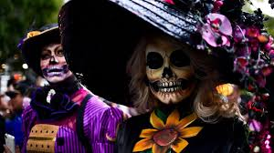
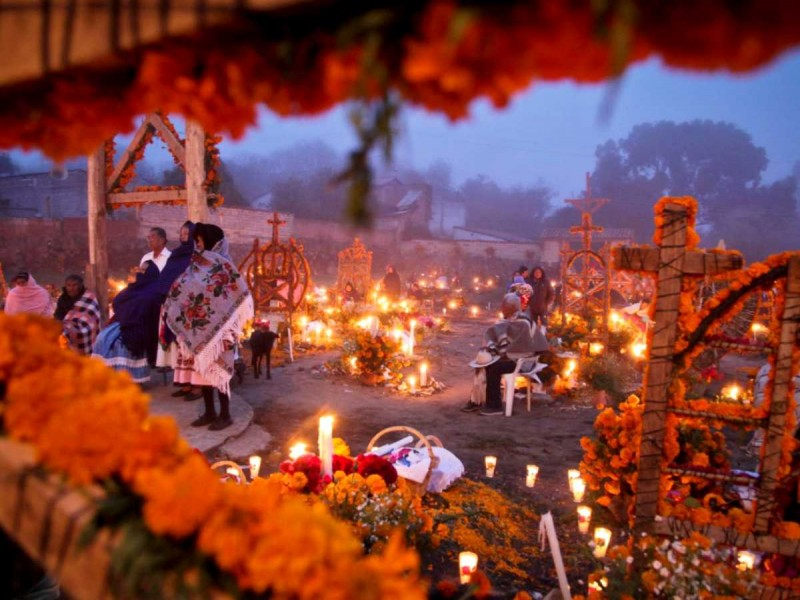
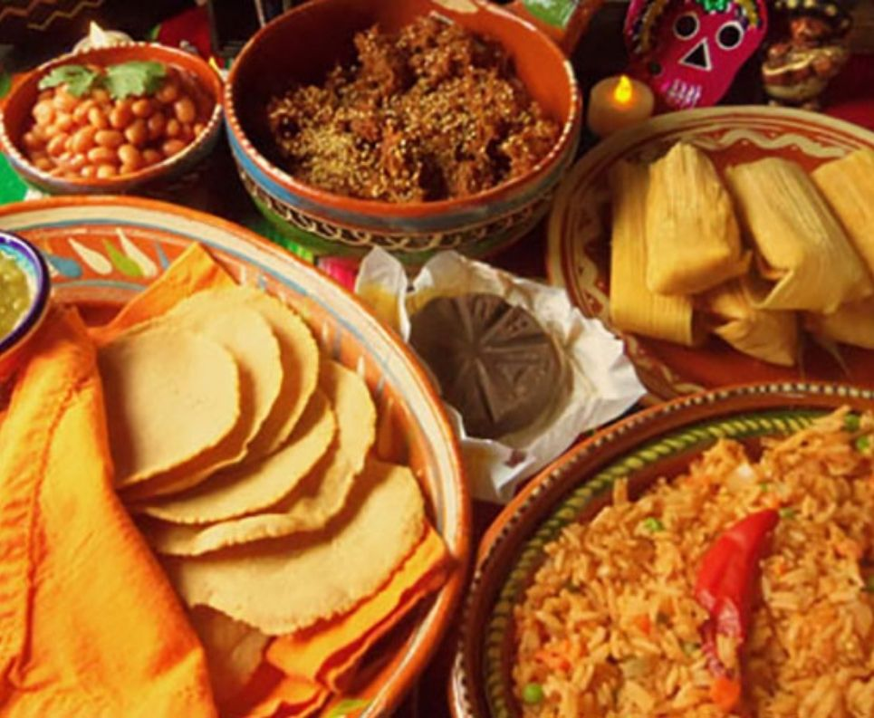
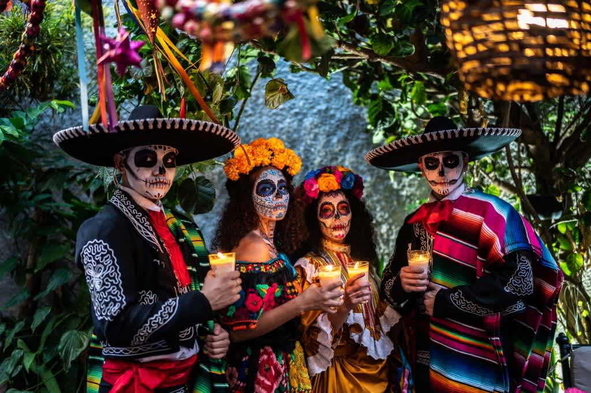

Tiene su origen en las raíces indígenas de las culturas autóctonas de Mesoamérica,
según los historiadores, para fusionarse con las creencias católicas y
dar lugar a una festividad que sigue evolucionando con el paso del tiempo.
El culto a la muerte era común entre las culturas prehispánicas.


Comidas
Platillos típicos son moles, tamales de rellenos diferentes, dulce de calabaza
en tacha, atole y pozole,
los cuales se pueden poner en las ofrendas para los difuntos y sus acompañantes.

Vestimenta
Algunas personas se visten con trajes de esqueleto y pintan como calaveras.
Cuenta la leyenda que los antepasados
regresan para celebrar con los vivos durante las vacaciones de principios de noviembre.

Ofrendas
El altar de muertos es un elemento fundamental en el conjunto de tradiciones mexicanas del Día de Muertos
, que consiste en instalar altares domésticos en honor de los muertos de
la familia donde se ofrece como ofrenda alimentos, velas, flores y objetos de uso cotidiano del difunto.